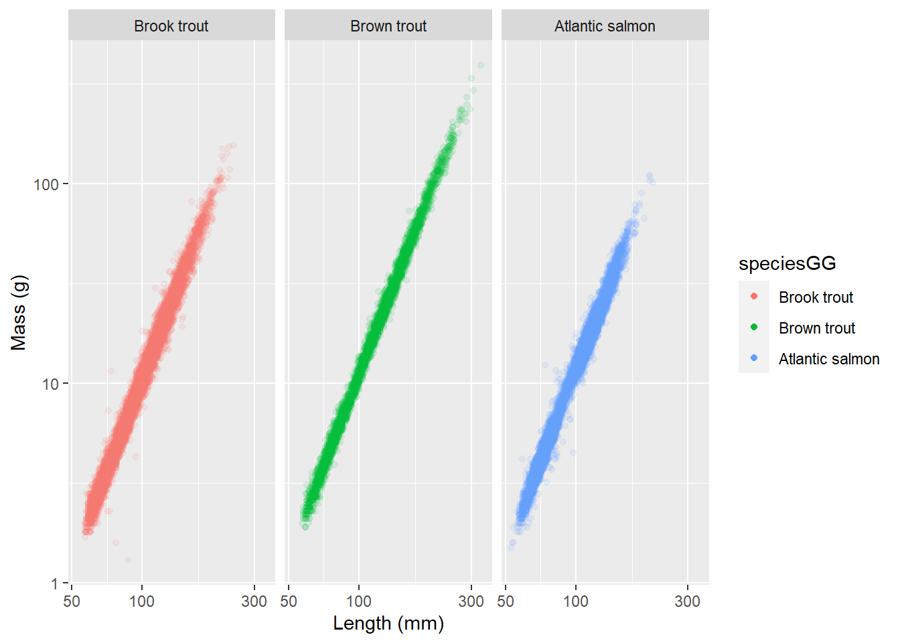
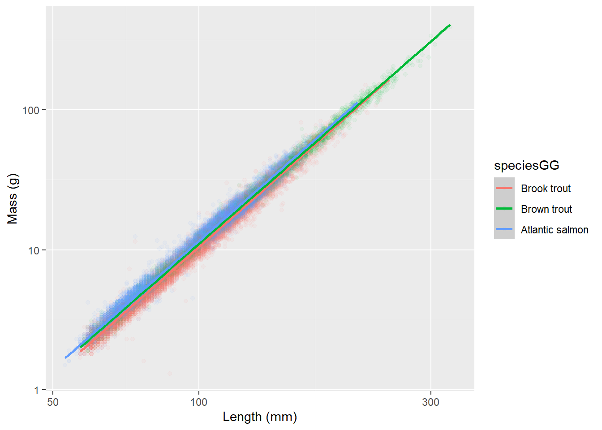
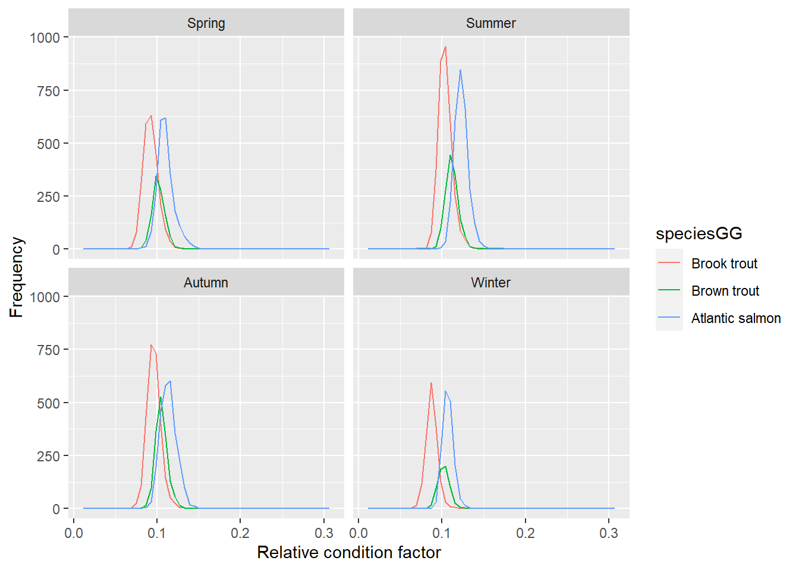
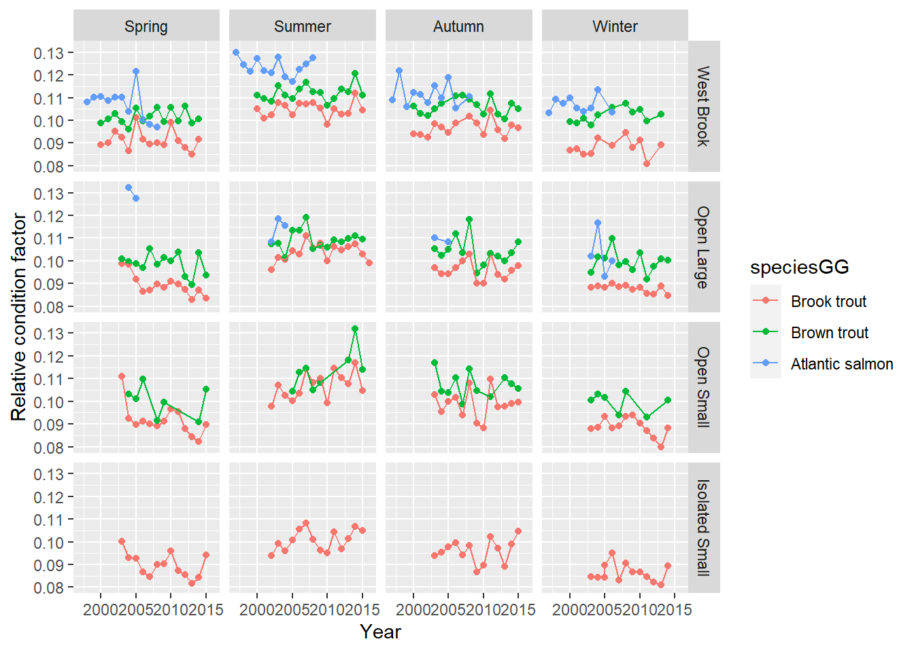
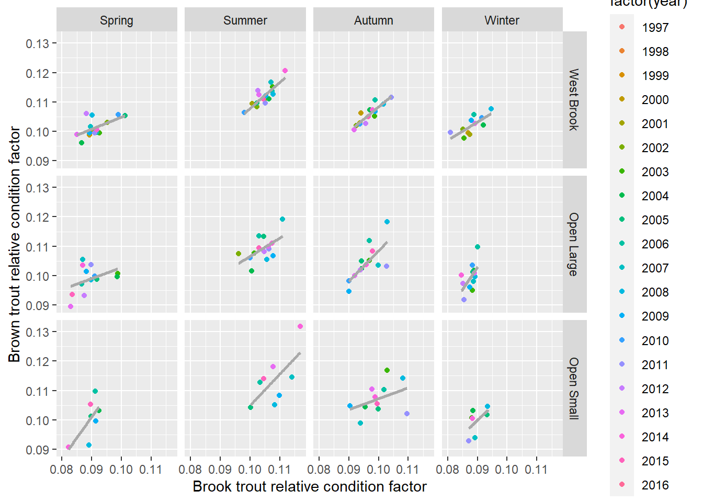
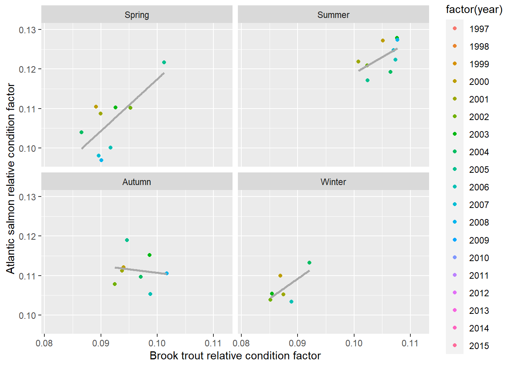
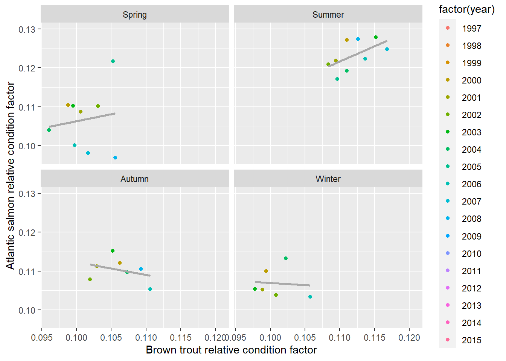

11 Condition factor
Explore relative condition factor which is the ratio between mass and length, where length is raised to the power of the exponent of the log10(mass):log10(length) relationship. Need to check whether the mass:length relationship varies among species and, if so, use species-specific exponents.
11.1 Get data
11.1.1 Get electrofishing data
Code
cd <- tar_read(cdWB_electro_target) # raw data
cd1 <- tar_read(cd1_target)
relCF_byYear <- tar_read(relCF_byYear_target)
relCF_byYearWide <- tar_read(relCF_byYearWide_target)11.1.2 Plot raw lengths/mass
Code
ggplot(cd1, aes(observedLength, observedWeight, color = speciesGG)) +
geom_point(alpha = 0.1) +
guides(color = guide_legend(override.aes = list(alpha = 1))) +
scale_x_log10("Length (mm)") +
scale_y_log10("Mass (g)") +
scale_color_discrete() +
facet_wrap(~speciesGG) 
Code
ggplot(cd1, aes(observedLength, observedWeight, color = speciesGG)) +
geom_point(alpha = 0.05) +
geom_smooth(method = "lm") +
scale_x_log10("Length (mm)") +
scale_y_log10("Mass (g)") +
scale_color_discrete()
11.1.3 Length/mass regression
Does species matter? Yes Differences appear very small on the graphs, but there are significant differences in slope between brook trout and the other two species (brown trout and Atlantic salmon).
Use slopes for each species in relative condition factor calculation. Model code below is repeated in getDataElectro_targets.R in addCF() to add cf and relCF to cdWB_electro_target
Code
mod1 <- lm(log10(observedWeight) ~ log10(observedLength) * factor(species), data = cd1)
mod2 <- lm(log10(observedWeight) ~ log10(observedLength) + factor(species), data = cd1)
mod3 <- lm(log10(observedWeight) ~ log10(observedLength), data = cd1)
AIC(mod1,mod2,mod3) |> arrange(AIC) df AIC
mod1 7 -83918.12
mod2 5 -83873.46
mod3 3 -79430.81Code
summary(mod1)
Call:
lm(formula = log10(observedWeight) ~ log10(observedLength) *
factor(species), data = cd1)
Residuals:
Min 1Q Median 3Q Max
-0.72259 -0.02808 0.00011 0.02785 0.43945
Coefficients:
Estimate Std. Error t value Pr(>|t|)
(Intercept) -5.006985 0.007429 -673.955 < 2e-16
log10(observedLength) 3.035531 0.003772 804.761 < 2e-16
factor(species)bkt -0.097179 0.010050 -9.669 < 2e-16
factor(species)bnt -0.007608 0.011159 -0.682 0.495
log10(observedLength):factor(species)bkt 0.027446 0.005083 5.399 6.76e-08
log10(observedLength):factor(species)bnt -0.006029 0.005541 -1.088 0.277
(Intercept) ***
log10(observedLength) ***
factor(species)bkt ***
factor(species)bnt
log10(observedLength):factor(species)bkt ***
log10(observedLength):factor(species)bnt
---
Signif. codes: 0 '***' 0.001 '**' 0.01 '*' 0.05 '.' 0.1 ' ' 1
Residual standard error: 0.04289 on 24249 degrees of freedom
(42 observations deleted due to missingness)
Multiple R-squared: 0.9886, Adjusted R-squared: 0.9886
F-statistic: 4.22e+05 on 5 and 24249 DF, p-value: < 2.2e-16Code
(CF_coefs <- tibble(
species = c("ats", "bkt", "bnt"),
intercept = c(
coef(mod1)[["(Intercept)"]],
coef(mod1)[["(Intercept)"]] + coef(mod1)[["factor(species)bkt"]],
coef(mod1)[["(Intercept)"]] + coef(mod1)[["factor(species)bnt"]]
),
slope = c(
coef(mod1)[["log10(observedLength)"]],
coef(mod1)[["log10(observedLength)"]] + coef(mod1)[["log10(observedLength):factor(species)bkt"]],
coef(mod1)[["log10(observedLength)"]] + coef(mod1)[["log10(observedLength):factor(species)bnt"]]
)
))# A tibble: 3 × 3
species intercept slope
<chr> <dbl> <dbl>
1 ats -5.01 3.04
2 bkt -5.10 3.06
3 bnt -5.01 3.0311.1.4 Relative condition factor by species
Code
ggplot(cd1, aes(relCF, color = speciesGG)) +
geom_freqpoly(bins = 50) +
labs(x = "Relative condition factor", y = "Frequency") +
scale_color_discrete() +
facet_wrap(~seasonGG)
11.1.5 Relative condition factor by species across years
Code
ggplot(relCF_byYear, aes(year, mRCF, color = speciesGG)) +
geom_point() +
geom_line() +
scale_color_discrete() +
labs(x = "Year", y = "Relative condition factor") +
facet_grid(riverGG~seasonGG)
11.1.6 Relative condition factor species comparison
Do relative condition factors covary between species?
Code
ggplot(relCF_byYearWide |> filter(riverGG != "Isolated Small"), aes(`Brook trout`, `Brown trout`)) +
geom_point(aes(color = factor(year))) +
geom_smooth(method = "lm", se = FALSE, color = 'darkgrey') +
scale_color_discrete() +
labs(x = "Brook trout relative condition factor", y = "Brown trout relative condition factor") +
facet_grid(riverGG~seasonGG)
Code
ggplot(relCF_byYearWide |> filter(riverGG == "West Brook"), aes(`Brook trout`, `Atlantic salmon`)) +
geom_point(aes(color = factor(year))) +
geom_smooth(method = "lm", se = FALSE, color = 'darkgrey') +
scale_color_discrete() +
labs(x = "Brook trout relative condition factor", y = "Atlantic salmon relative condition factor") +
facet_wrap(~seasonGG)
Code
ggplot(relCF_byYearWide |> filter(riverGG == "West Brook"), aes(`Brown trout`, `Atlantic salmon`)) +
geom_point(aes(color = factor(year))) +
geom_smooth(method = "lm", se = FALSE, color = 'darkgrey') +
scale_color_discrete() +
labs(x = "Brown trout relative condition factor", y = "Atlantic salmon relative condition factor") +
facet_wrap(~seasonGG)
11.1.7 Seasonal comparison
TO ADD